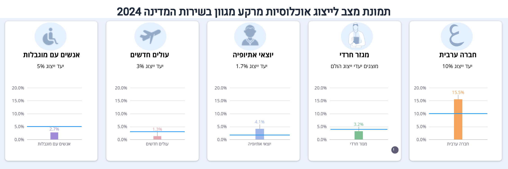

~63%
נשים מכלל העובדים
נשים מהוות כ-63% מכלל העובדים בשירות המדינה.
9%
נשים בדרג השכר הגבוה ביותר
כ-46% בניהול בכיר, כ-40% בדרג מוביל (היעד 50%), רק 9% בדרג 130.
83.5%
יחס שכר נשים לגברים
שיפור מ-73% ב-2005 - אבל עדיין פער של 16.5% ב-2023.